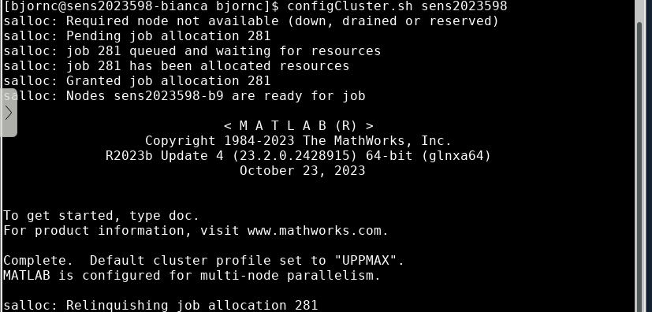

MATLAB user guide¶
The MATLAB module¶
MATLAB can be started only if you load the matlab module first. Most of available official toolboxes are also available. At the time of this writing, our most recent installation is: matlab/R2023b
Doing:
will give you the latest version.
If you need a different version, check the availability by:
To get started with MATLAB do (for instance):
That will start a matlab session with the common GUI. Use & to have MATLAB in background making terminal still active for other work.
A good and important suggestion is that you always specify a certain version. This is to be able to reproduce your work, a very important key in research!
First time, since May 13 2024¶
-
If you use MATLAB after May 13 2024, of any version, you have to do the following step to be able to use the full features of running parallel jobs.
- only needs to be called once per version of MATLAB.
- Note, however, that on Bianca this has to be done separately.
-
After logging into the cluster, configure MATLAB to run parallel jobs on the cluster by calling the shell script configCluster.sh.
- This will run a short configuration job in an interactive session.
- Jobs will now default to the cluster rather than submit to the local machine.
- It should look like this (example for Bianca)

- The session should exit automatically but if not you can end the session by
exit- or
<CTRL-C>
- When done, start Matlab as you usually do with
matlab &.
Warning
- Do these steps for each matlab version you will use.
- On Bianca you need to do this for each sens project that will use MATLAB, as well.
Tip
- Check the Matlab version for which you have set the slurm configuration by
- Look for dates from May 2024 and onwards.
Introduction¶
Using MATLAB on the cluster enables you to utilize high performance facilities like:
- Parallel computing
- Parallel for-loops
- Evaluate functions in the background
- Big data processing
- Analyze big data sets in parallel
- Batch Processing
- Offload execution of functions to run in the background
- GPU computing (Available on Bianca and Snowy)
- Accelerate your code by running it on a GPU
- Machine & Deep learning
See MathWorks's complete user guide
Some online tutorials and courses:
- Parallel computing
- Machine Learning
- Deep Learning
Running MATLAB¶
Warning
- It is possible to start Matlab on the Login node.
-
This can be a way to work if you
- work with just light analysis
- just use Matlab to start batch jobs from the graphical user interface.
-
Then you should start matlab with just ONE thread
Graphical user interface¶
To start MATLAB with its usual graphical interface (GUI), start it with:
If you will use significant resources, like processor or RAM, you should start an interactive session on a calculation node. Use at least 2 cores (-n 2), when running interactive. Otherwise MATLAB may not start. You can use several cores if you will do some parallel calculations (see parallel section below). Example:
This example starts a session with 2 cores for a wall time of 1 hour.
MATLAB in terminal¶
For simple calculations it is possible to start just a command shell in your terminal:
Exit with 'exit'.
Run script from terminal or bash script
In order to run a script directly from terminal:
List all ways to run/start MATLAB:
ThinLinc¶
You may get the best of the MATLAB graphics by running it the ThinLinc environment.
-
For rackham (in ThinLinc app):
rackham-gui.uppmax.uu.se -
For Bianca (from web-browser): https://bianca.uppmax.uu.se
You may want to confer our UPPMAX ThinLinc user guide.
How to run parallel jobs¶
How to run parallel jobs for the first time, since May 13 2024¶
- If you use MATLAB after May 13 2024, of any version, you have to do the following step to be able to use the full features of running parallel jobs.
- only needs to be called once per version of MATLAB.
- Note, however, that on Bianca this has to be done separately.
- After logging into the cluster, configure MATLAB to run parallel jobs on the cluster by calling the shell script configCluster.sh.
- This will run a short configuration job in an interactive session, closing itself when done.
- Jobs will now default to the cluster rather than submit to the local machine.
Two MATLAB commands¶
Two commands in MATLAB are important to make your code parallel:
parforwill distribute your "for loop" among several workers (cores)parfevalruns a section or a function on workers in the background
Use interactive matlab¶
First, start an interactive session on a calculation node with, for instance 8 cores by:
In MATLAB open a parallel pool of 8 local workers:
What happens if you try to run the above command twice? You can't run multiple parallel pools at the same time. Query the number of workers in the parallel pool:
gcp will "get current pool" and return a handle to it. If a pool has not already been started, it will create a new one first and then return the handle to it:
Shutdown the parallel pool:
Will check to see if a pool is open and if so, deletes it.
This will delete a pool if it exists, but won't create one first if it doesn't already exist.
With parpool('local') or parcluster('local') you will use settings for 'local' . With parpool('local',20) you will get 20 cores, but else the 'local' settings, like automatic shutdown after 30 minutes. You can change your settings here: HOME > ENVIRONMENT > Parallel > Parallel preferences.
MATLAB Batch¶
With MATLAB you can e.g. submit jobs directly to our job queue scheduler, without having to use Slurm's commands directly. Let us first make two small function. The first one, little simpler, saved in the file parallel_example.m:
function t = parallel_example(nLoopIters, sleepTime)
t0 = tic;
parfor idx = 1:nLoopIters
A(idx) = idx;
pause(sleepTime);
end
t = toc(t0);
and the second, little longer, saved in parallel_example_hvy.m:
function t = parallel_example_hvy(nLoopIters, sleepTime)
t0 = tic;
ml = 'module list';
[status, cmdout] = system(ml);
parfor idx = 1:nLoopIters
A(idx) = idx;
for foo = 1:nLoopIters*sleepTime
A(idx) = A(idx) + A(idx);
A(idx) = A(idx)/3;
end
end
Begin by running the command
in Matlab Command Window to choose a cluster configuration. Matlab will set up a configuration and will then print out some instructions, seen below. You can also set environments that is read if you don't specify it. Go to HOME > ENVIRONMENT > Parallel > Parallel preferences.
[1] rackham
[2] snowy
Select a cluster [1-2]: 1
>>
>> c = parcluster('rackham'); %on Bianca 'bianca Rxxxxx'
>> c.AdditionalProperties.AccountName = 'snic2021-X-YYY';
>> c.AdditionalProperties.QueueName = 'node';
>> c.AdditionalProperties.WallTime = '00:10:00';
>> c.saveProfile
>> job = c.batch(@parallel_example, 1, {90, 5}, 'pool', 19) %19 is for 20 cores. On Snowy and Bianca use 15.
>> job.wait
>> job.fetchOutputs{:}
Follow them. These inform you what is needed in your script or in command line to run in parallel on the cluster. The line c.batch(@parallel_example, 1, {90, 5}, 'pool', 19) can be understood as put the function parallel_example to the batch queue. The arguments to batch are:
c.batch(function name, number of output arguments, {the inputs to the function}, 'pool', no of additional workers to the master)
c.batch(@parallel_example, 1 (t=toc(t0)), {nLoopIters=90, sleepTime=5}, 'pool', 19)
To see the output to screen from jobs, use job.Tasks.Diary. Output from the submitted function is fetched with 'fetchOutputs()'.
For jobs using several nodes (in this case 2) you may modify the call to:
>> configCluster
[1] rackham
[2] snowy
Select a cluster [1-2]: 1
>>
>> c = parcluster('rackham'); %on Bianca 'bianca R<version>'
>> c.AdditionalProperties.AccountName = 'snic2021-X-YYY';
>> c.AdditionalProperties.QueueName = 'node';
>> c.AdditionalProperties.WallTime = '00:10:00';
>> c.saveProfile
>> job = c.batch(@parallel_example_hvy, 1, {1000, 1000000}, 'pool', 39)% 31 on Bianca or Snowy
>> job.wait
>> job.fetchOutputs{:}
where parallel_example-hvy.m was the script presented above.
For the moment jobs are hard coded to be node jobs. This means that if you request 21 tasks instead (20 + 1) you will get a 2 node job, but only 1 core will be used on the second node. In this case you'd obviously request 40 tasks (39 + 1) instead.
For more information about Matlab's Distributed Computing features please see Matlab's HPC Portal.
GPU¶
Running MATLAB with GPU is, as of now, only possible on the Snowy and Bianca clusters. Uppsala University affiliated staff and students with allocation on Snowy can use this resource.
Start an interactive session with at least 2 cores (otherwise MATLAB may not start). On Snowy, getting (for instance) 2 cpu:s (-n 2) and 1 gpu:
On Bianca, getting 3 cpu:s and 1 gpu:
Note that wall time -t should be set to more than one hour to not automatically put job in devel or devcore queue, which is not allowed for gpu jobs. Also check the GPU quide for Snowy at Using the GPU nodes on Snowy.
Load MATLAB module and start matlab as usual (with &) in the new session. Then test if the gpu device is found by typing:
On Bianca you may get an error. Follow the instructons and you can run anyway. Example code:
For more information about GPU computing confer the MathWorks web about GPU computing.
Deep Learning with GPUs¶
For many functions in Deep Learning Toolbox, GPU support is automatic if you have a suitable GPU and Parallel Computing Toolbox™. You do not need to convert your data to gpuArray. The following is a non-exhaustive list of functions that, by default, run on the GPU if available.
-
trainNetwork (Deep Learning Toolbox)
-
predict (Deep Learning Toolbox)
-
predictAndUpdateState (Deep Learning Toolbox)
-
classify (Deep Learning Toolbox)
-
classifyAndUpdateState (Deep Learning Toolbox)
-
activations (Deep Learning Toolbox)
Shell batch jobs¶
Sometimes when matlab scripts are part of workflows/pipelines it may be easier to work directly with the batch scripts.
Batch script example with 2 nodes (Rackham), matlab_submit.sh.
#!/bin/bash -l
#SBATCH -A <proj>
#SBATCH -p devel
#SBATCH -N 2
#SBATCH -n 40
module load matlab/R2020b &> /dev/null
srun -N 2 -n 40 matlab -batch "run('<path/to/m-script>')"
Run with
Common problems¶
Sometimes things do not work out.
As a first step, try with removing local files:
If the graphics is slow, try:
Unfortunately this only works from login nodes.
You may want to run MATLAB on a single thread. This makes it work: